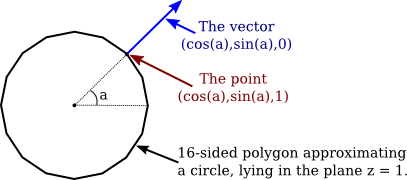

In this section, we will see how to use light and material in OpenGL. The functions that are discussed in this section are specific to older versions of OpenGL, and will not carry over directly to other graphics APIs. (But the general ideas that they implement, which were covered in the previous section are more generally applicable.)
In OpenGL 1.1, the use of light and material must be enabled by calling glEnable(GL_LIGHTING). When lighting is disabled, the color of a vertex is simply the current color as set by glColor*. When lighting is enabled, the color of a vertex is computed using a mathematical formula that takes into account the lighting of the scene and the material properties that have been assigned to the vertex, as discussed in the previous section. Now it's time to learn about the OpenGL commands that are used to configure lighting and to assign materials to objects.
It is common for lighting to be turned on for rendering some parts of a scene, but turned off for other parts. We will say that some objects are "lit" while others aren't. For example, wireframe objects are usually drawn with lighting disabled, even if they are part of a scene in which solid objects are lit. But note that it is illegal to call glEnable or glDisable between calls to glBegin and glEnd, so it is not possible for part of a primitive to be lit while another part of the same primitive is unlit. (I should note that when lighting is enabled, it is applied to point and line primitives as well as to polygons, even though it rarely makes sense to do so.) Lighting can be enabled and disabled by calling glEnable and glDisable with parameter GL_LIGHTING. Other light and material settings don't have to be modified when lighting is turned off, since they are simply ignored when lighting is disabled.
To light a scene, in addition to enabling GL_LIGHTING, you must configure at least one source of light. For very basic lighting, it often suffices to call
glEnable(GL_LIGHT0);
This command turns on a directional light that shines from the direction of the viewer into the scene. (Note that the last character in GL_LIGHT0 is a zero.) Since it shines from the direction of the viewer, it will illuminate everything that the user can see. The light is white, with no specular component; that is, you will see the diffuse color of objects, without any specular highlights. We will see later in this section how to change the characteristics of this light source and how to configure additional sources. But first, we will consider materials and normal vectors.
Material properties are vertex attributes in that same way that color is a vertex attribute. That is, the OpenGL state includes a current value for each of the material properties. When a vertex is generated by a call to one of the glVertex* functions, a copy of each of the current material properties is stored, along with the vertex coordinates. When a primitive that contains the vertex is rendered, the material properties that are associated with the vertex are used, along with information about lighting, to compute a color for the vertex.
This is complicated by the fact that polygons are two-sided, and the front face and back face of a polygon can have different materials. This means that, in fact, two sets of material property values are stored for each vertex: the front material and the back material. (The back material isn't actually used unless you turn on two-sided lighting, which will be discussed below.)
With all that in mind, we will look at functions for setting the current values of material properties. For setting the ambient, diffuse, specular, and emission material colors, the function is
void glMaterialfv( int side, int property, float* valueArray )
The first parameter can be GL_FRONT_AND_BACK, GL_FRONT, or GL_BACK. It tells whether you are setting a material property value for the front face, the back face, or both. The second parameter tells which material property is being set. It can be GL_AMBIENT, GL_DIFFUSE, GL_SPECULAR, GL_EMISSION, or GL_AMBIENT_AND_DIFFUSE. Note that it is possible to set the ambient and diffuse colors to the same value with one call to glMaterialfv by using GL_AMBIENT_AND_DIFFUSE as the property name; this is the most common case. The last parameter to glMaterialfv is an array containing four float numbers. The numbers give the RGBA color components as values in the range from 0.0 to 1.0; values outside this range are actually allowed, and will be used in lighting computations, but such values are unusual. Note that an alpha component is required, but it is used only in the case of diffuse color: When the vertex color is computed, its alpha component is set equal to the alpha component of the diffuse material color.
The shininess material property is a single number rather than an array, and there is a different function for setting its value (without the "v" at the end of the name):
void glMaterialf( int side, int property, float value )
Again, the side can be GL_FRONT_AND_BACK, GL_FRONT, or GL_BACK. The property must be GL_SHININESS. And the value is a float in the range 0.0 to 128.0.
Compared to the large number of versions of glColor* and glVertex*, the options for setting material are limited. In particular, it is not possible to set a material color without defining an array to contain the color component values. Suppose for example that we want to set the ambient and diffuse colors to a bluish green. In C, that might be done with
float bgcolor[4] = { 0.0, 0.7, 0.5, 1.0 };
glMaterialfv( GL_FRONT_AND_BACK, GL_AMBIENT_AND_DIFFUSE, bgcolor );
With my JavaScript simulator for OpenGL, this would look like
let bgcolor = [ 0.0, 0.7, 0.5, 1.0 ]; glMaterialfv( GL_FRONT_AND_BACK, GL_AMBIENT_AND_DIFFUSE, bgcolor );
And in the JOGL API for Java, where methods with array parameters have an additional parameter to give the starting index of the data in the array, it becomes
float[] bgcolor = { 0.0F, 0.7F, 0.5F, 1.0F };
gl.glMaterialfv(GL2.GL_FRONT_AND_BACK, GL2.GL_AMBIENT_AND_DIFFUSE, bgcolor, 0);
In C, the third parameter is actually a pointer to float, which allows the flexibility of storing the values for several material properties in one array. Suppose, for example, that we have a C array
float gold[13] = { 0.24725, 0.1995, 0.0745, 1.0, /* ambient */
0.75164, 0.60648, 0.22648, 1.0, /* diffuse */
0.628281, 0.555802, 0.366065, 1.0, /* specular */
50.0 /* shininess */
};
where the first four numbers in the array specify an ambient color; the next four, a diffuse color; the next four, a specular color; and the last number, a shininess exponent. This array can be used to set all the material properties:
glMaterialfv( GL_FRONT_AND_BACK, GL_AMBIENT, gold ); glMaterialfv( GL_FRONT_AND_BACK, GL_DIFFUSE, &gold[4] ); glMaterialfv( GL_FRONT_AND_BACK, GL_SPECULAR, &gold[8] ); glMaterialf( GL_FRONT_AND_BACK, GL_SHININESS, gold[12] );
Note that the last function is glMaterialf rather than glMaterialfv, and that its third parameter is a number rather than a pointer. Something similar can be done in Java with
float[] gold = { 0.24725F, 0.1995F, 0.0745F, 1.0F, /* ambient */
0.75164F, 0.60648F, 0.22648F, 1.0F, /* diffuse */
0.628281F, 0.555802F, 0.366065F, 1.0F, /* specular */
50.0F /* shininess */
};
gl.glMaterialfv( GL2.GL_FRONT_AND_BACK, GL2.GL_AMBIENT, gold, 0 );
gl.glMaterialfv( GL2.GL_FRONT_AND_BACK, GL2.GL_DIFFUSE, gold, 4 );
gl.glMaterialfv( GL2.GL_FRONT_AND_BACK, GL2.GL_SPECULAR, gold, 8 );
gl.glMaterialf( GL2.GL_FRONT_AND_BACK, GL2.GL_SHININESS, gold[12] );
The functions glMaterialfv and glMaterialf can be called at any time, including between calls to glBegin and glEnd. This means that different vertices of a primitive can have different material properties.
So, maybe you like glColor* better than glMaterialfv? If so, you can use it to work with material as well as regular color. If you call
glEnable( GL_COLOR_MATERIAL );
then some of the material color properties will track the color. By default, setting the color will also set the current front and back, ambient and diffuse material properties. That is, for example, calling
glColor3f( 1, 0, 0 );
will, if lighting is enabled, have the same effect as calling
glMaterialfv( GL_FRONT_AND_BACK, GL_AMBIENT_AND_DIFFUSE, array );
where array contains the values 1, 0, 0, 1. You can change the material property that tracks the color using
void glColorMaterial( side, property );
where side can be GL_FRONT_AND_BACK, GL_FRONT, or GL_BACK, and property can be GL_AMBIENT, GL_DIFFUSE, GL_SPECULAR, GL_EMISSION, or GL_AMBIENT_AND_DIFFUSE. Neither glEnable nor glColorMaterial can be called between calls to glBegin and glEnd, so all of the vertices of a primitive must use the same setting.
Recall that when glDrawArrays or glDrawElements is used to draw a primitive, the color values for the vertices of the primitive can be taken from a color array, as specified using glColorPointer. (See Subsection 3.4.2.) There are no similar arrays for material properties. However, if a color array is used while lighting is enabled, and if GL_COLOR_MATERIAL is also enabled, then the color array will be used as the source for the values of the material properties that are tracking the color.
Normal vectors are essential to lighting calculations. (See Subsection 4.1.3.) Like color and material, normal vectors are attributes of vertices. The OpenGL state includes a current normal vector, which is set using functions in the family glNormal*. When a vertex is specified with glVertex*, a copy of the current normal vector is saved as an attribute of the vertex, and it is used as the normal vector for that vertex when the color of the vertex is computed by the lighting equation. Note that the normal vector for a vertex must be specified before glVertex* is called for that vertex.
Functions in the family glNormal* include glNormal3f, glNormal3d, glNormal3fv, and glNormal3dv. As usual, a "v" means that the values are in an array, "f" means that the values are floats, and "d" means that the values are doubles. (All normal vectors have three components). Some examples:
glNormal3f( 0, 0, 1 ); // (This is the default value.)
glNormal3d( 0.707, 0.707, 0.0 );
float normalArray[3] = { 0.577, 0.577, 0.577 };
glNormal3fv( normalArray );
For a polygon that is supposed to look flat, the same normal vector is used for all of the vertices of the polygon. For example, to draw one side of a cube, say the "top" side, facing in the direction of the positive y-axis:
glNormal3f( 0, 1, 0 ); // Points along positive y-axis glBegin(GL_QUADS); glVertex3fv(1,1,1); glVertex3fv(1,1,-1); glVertex3fv(-1,1,-1); glVertex3fv(-1,1,1); glEnd();
Remember that the normal vector should point out of the front face of the polygon, and that the front face is determined by the order in which the vertices are generated. (You might think that the front face should be determined by the direction in which the normal vector points, but that is not how its done. If a normal vector for a vertex points in the wrong direction, then lighting calculations will not give the correct color for that vertex.)
When modeling a smooth surface, normal vectors should be chosen perpendicular to the surface, rather than to the polygons that approximate the surface. (See Subsection 4.1.3.) Suppose that we want to draw the side of a cylinder with radius 1 and height 2, where the center of the cylinder is at (0,0,0) and the axis lies along the z-axis. We can approximate the surface using a single triangle strip. The top and bottom edges of the side of a cylinder are circles. Vertices along the top edge will have coordinates (cos(a),sin(a),1) and vertices along the bottom edge will have coordinates (cos(a),sin(a),−1), where a is some angle. The normal vector points in the same direction as the radius, but its z-coordinate is zero since it points directly out from the side of the cylinder. So, the normal vector to the side of the cylinder at both of these points will be (cos(a),sin(a),0). Looking down the z-axis at the top of the cylinder, it looks like this:

When we draw the side of the cylinder as a triangle strip, we have to generate pairs of vertices on alternating edges. The normal vector is the same for the two vertices in the pair, but it is different for different pairs. Here is the code:
glBegin(GL_TRIANGLE_STRIP);
for (i = 0; i <= 16; i++) {
double angle = 2*3.14159/16 * i; // i 16-ths of a full circle
double x = cos(angle);
double y = sin(angle);
glNormal3f( x, y, 0 ); // Normal for both vertices at this angle.
glVertex3f( x, y, 1 ); // Vertex on the top edge.
glVertex3f( x, y, -1 ); // Vertex on the bottom edge.
}
glEnd();
When we draw the top and bottom of the cylinder, on the other hand, we want a flat polygon, with the normal vector pointing in the direction (0,0,1) for the top and in the direction (0,0,−1) for the bottom:
glNormal3f( 0, 0, 1);
glBegin(GL_TRIANGLE_FAN); // Draw the top, in the plane z = 1.
for (i = 0; i <= 16; i++) {
double angle = 2*3.14159/16 * i;
double x = cos(angle);
double y = sin(angle);
glVertex3f( x, y, 1 );
}
glEnd();
glNormal3f( 0, 0, -1 );
glBegin(GL_TRIANGLE_FAN); // Draw the bottom, in the plane z = -1
for (i = 16; i >= 0; i--) {
double angle = 2*3.14159/16 * i;
double x = cos(angle);
double y = sin(angle);
glVertex3f( x, y, -1 );
}
glEnd();
Note that the vertices for the bottom are generated in the opposite order from the vertices for the top, to account for the fact that the top and bottom face in opposite directions. As always, vertices need to be enumerated in counterclockwise order, as seen from the front.
When drawing a primitive with glDrawArrays or glDrawElements, it is possible to provide a different normal for each vertex by using a normal array to hold the normal vectors. The normal array works in the same way as the color array and the vertex array. To use one, you need to enable the use of a normal array by calling
glEnableClientState(GL_NORMAL_ARRAY);
The coordinates for the normal vectors must be stored in an array (or in an nio buffer for JOGL), and the location of the data must be specified by calling
glNormalPointer( type, stride, data );
The type specifies the type of values in the array. It can be GL_INT, GL_FLOAT, or GL_DOUBLE. The stride is an integer, which is usually 0, meaning that there is no extra data in the array between the normal vectors. And data is the array (or buffer) that holds the normal vectors, with three numbers for each normal.
With this setup, when glDrawArrays or glDrawElements is used to draw a primitive, the normal vectors for the primitive will be pulled from the array. Note that if GL_NORMAL_ARRAY is not enabled, then all of the normal vectors for the primitive will be the same, and will be equal to the current normal vector as set by glNormal*.
The lighting equation assumes that normal vectors are unit normals, that is, that they have length equal to one. The default in OpenGL is to use normal vectors as provided, even if they don't have length one, which will give incorrect results. However, if you call
glEnable(GL_NORMALIZE);
then OpenGL will automatically convert every normal vector into a unit normal that points in the same direction.
Note that when a geometric transform is applied, normal vectors are transformed along with vertices; this is necessary because a transformation can change the direction in which a surface is facing. A scaling transformation can change the length of a normal vector, so even if you provided unit normal vectors, they will not be unit normals after a scaling transformation. However, if you have enabled GL_NORMALIZE, the transformed normals will automatically be converted back to unit normals. My recommendation is to always enable GL_NORMALIZE as part of your OpenGL initialization. The only exception would be if all of the normal vectors that you provide are of length one and you do not apply any scaling transformations. (Translations and rotations are OK, because they do not modify lengths.)
OpenGL 1.1 supports at least eight light sources, which are identified by the constants GL_LIGHT0, GL_LIGHT1, ..., GL_LIGHT7. (An OpenGL implementation might allow additional lights.) Each light source can be configured to be either a directional light or a point light, and each light can have its own diffuse, specular, and ambient intensities. (See Subsection 4.1.2.)
By default, all of the light sources are disabled. To enable a light, call glEnable(light), where light is one of the constants GL_LIGHT0, GL_LIGHT1, .... However, just enabling a light does not give any illumination, except in the case of GL_LIGHT0, since all light intensities are zero by default, with the single exception of the diffuse color of light number 0. To get any light from the other light sources, you need to change some of their properties. Light properties can be set using the functions
void glLightfv( int light, int property, float* valueArray );
The first parameter is one of the constants GL_LIGHT0, GL_LIGHT1, ..., GL_LIGHT7. It specifies which light is being configured. The second parameter says which property of the light is being set. It can be GL_DIFFUSE, GL_SPECULAR, GL_AMBIENT, or GL_POSITION. The last parameter is an array that contains at least four float numbers, giving the value of the property.
For the color properties, the four numbers in the array specify the red, green, blue, and alpha components of the color. (The alpha component is not actually used for anything.) The values generally lie in the range 0.0 to 1.0, but can lie outside that range; in fact, values larger than 1.0 are occasionally useful. Remember that the diffuse and specular colors of a light tell how the light interacts with the diffuse and specular material colors, and the ambient color is simply added to the global ambient light when the light is enabled. For example, to set up light zero as a bluish light, with blue specular highlights, that adds a bit of blue to the ambient light when it is turned on, you might use:
float blue1[4] = { 0.4, 0.4, 0.6, 1 };
float blue2[4] = { 0, 0, 0.8, 1 };
float blue3[4] = { 0, 0, 0.15, 1 };
glLightfv( GL_LIGHT1, GL_DIFFUSE, blue1 );
glLightfv( GL_LIGHT1, GL_SPECULAR, blue2 );
glLightfv( GL_LIGHT1, GL_AMBIENT, blue3 );
It would likely take some experimentation to figure out exactly what values to use in the arrays to get the effect that you want.
The GL_POSITION property of a light is quite a bit different. It is used both to set whether the light is a point light or a directional light, and to set its position or direction. The property value for GL_POSITION is an array of four numbers (x,y,z,w), of which at least one must be non-zero. When the fourth number, w, is zero, then the light is directional and the point (x,y,z) specifies the direction of the light: The light rays shine in the direction of the line from the point (x,y,z) towards the origin. This is related to homogeneous coordinates: The source of the light can be considered to be a point at infinity in the direction of (x,y,z).
On the other hand, if the fourth number, w, is non-zero, then the light is a point light, and it is located at the point (x/w, y/w, z/w). Usually, w is 1. The value (x,y,z,1) gives a point light at (x,y,z). Again, this is really homogeneous coordinates.
The default position for all lights is (0,0,1,0), representing a directional light shining from the positive direction of the z-axis, towards the negative direction of the z-axis.
One important and potentially confusing fact about lights is that the position that is specified for a light is transformed by the modelview transformation that is in effect at the time the position is set using glLightfv. Another way of saying this is that the position is set in eye coordinates, not in world coordinates. Calling glLightfv with the property set to GL_POSITION is very much like calling glVertex*. The light position is transformed in the same way that the vertex coordinates would be transformed. For example,
float position[4] = { 1,2,3,1 }
glLightfv(GL_LIGHT1, GL_POSITION, position);
puts the light in the same place as
glTranslatef(1,2,3);
float position[4] = { 0,0,0,1 }
glLightfv(GL_LIGHT1, GL_POSITION, position);
For a directional light, the direction of the light is transformed by the rotational part of the modelview transformation.
There are three basic ways to use light position. It is easiest to think in terms of potentially animated scenes.
First, if the position is set before any modelview transformation is applied, then the light is fixed with respect to the viewer. For example, the default light position is effectively set to (0,0,1,0) while the modelview transform is the identity. This means that it shines in the direction of the negative z-axis, in the coordinate system of the viewer, where the negative z-axis points into the screen. Another way of saying this is that the light always shines from the direction of the viewer into the scene. It's like the light is attached to the viewer. If the viewer moves about in the world, the light moves with the viewer.
Second, if the position is set after the viewing transform has been applied and before any modeling transform is applied, then the position of the light is fixed in world coordinates. It will not move with the viewer, and it will not move with objects in the scene. It's like the light is attached to the world.
Third, if the position is set after a modeling transform has been applied, then the light is subject to that modeling transformation. This can be used to make a light that moves around in the scene as the modeling transformation changes. If the light is subject to the same modeling transformation as an object, then the light will move around with that object, as if it is attached to the object.
The sample program glut/four-lights.c or jogl/FourLights.java uses multiple moving, colored lights and lets you turn them on and off to see the effect. The demo below is a JavaScript version of the same program. The program lets you see how light from various sources combines to produce the visible color of an object. The source code provides examples of configuring lights and using material properties.
In addition to the properties of individual light sources, the OpenGL lighting system uses several global properties. There are only three such properties in OpenGL 1.1. One of them is the global ambient light, which is ambient light that doesn't come from the ambient color property of any light source. Global ambient light will be present in the environment even if all of GL_LIGHT0, GL_LIGHT1, ... are disabled. By default, the global ambient light is black (that is, its RGB components are all zero). The value can be changed using the function
void glLightModelfv( int property, float* value )
where the property must be GL_LIGHT_MODEL_AMBIENT and the value is an array containing four numbers giving the RGBA color components of the global ambient light as numbers in the range 0.0 to 1.0. In general, the global ambient light level should be quite low. For example, in C:
float ambientLevel[] = { 0.15, 0.15, 0.15, 1 };
glLightModelfv( GL_LIGHT_MODEL_AMBIENT, ambientLevel );
The alpha component of the color is usually set to 1, but it is not used for anything. For JOGL, as usual, there is an extra parameter to specify the starting index of the data in the array, and the example becomes:
float[] ambientLevel = { 0.15F, 0.15F, 0.15F, 0 };
gl.glLightModelfv( GL2.GL_LIGHT_MODEL_AMBIENT, ambientLevel, 0 );
The other two light model properties are options that can be either off or on. The properties are GL_LIGHT_MODEL_TWO_SIDE and GL_LIGHT_MODEL_LOCAL_VIEWER. They can be set using the function
void glLightModeli( int property, int value )
with a value equal to 0 or 1 to indicate whether the option should be off or on. You can use the symbolic constants GL_FALSE and GL_TRUE for the value, but these are just names for 0 and 1.
GL_LIGHT_MODEL_TWO_SIDE is used to turn on two-sided lighting. Recall that a polygon can have two sets of material properties, a front material and a back material. When two-sided lighting is off, which is the default, only the front material is used; it is used for both the front face and the back face of the polygon. Furthermore, the same normal vector is used for both faces. Since those vectors point—or at least are supposed to point—out of the front face, they don't give the correct result for the back face. In effect, the back face looks like it is illuminated by light sources that lie in front of the polygon, but the back face should be illuminated by the lights that lie behind the polygon.
On the other hand, when two-sided lighting is on, the back material is used on the back face and the direction of the normal vector is reversed when it is used in lighting calculations for the back face.
You should use two-sided lighting whenever there are back faces that might be visible in your scene. (This will not be the case when your scene consists of "solid" objects, where the back faces are hidden inside the solid.) With two-sided lighting, you have the option of using the same material on both faces or specifying different materials for the two faces. For example, to put a shiny purple material on front faces and a duller yellow material on back faces:
glLightModeli( GL_LIGHT_MODEL_TWO_SIDE, 1 ); // Turn on two-sided lighting.
float purple[] = { 0.6, 0, 0.6, 1 };
float yellow[] = { 0.6, 0.6, 0, 1 };
float white[] = { 0.4, 0.4, 0.4, 1 }; // For specular highlights.
float black[] = { 0, 0, 0, 1 };
glMaterialfv( GL_FRONT, GL_AMBIENT_AND_DIFFUSE, purple ); // front material
glMaterialfv( GL_FRONT, GL_SPECULAR, white );
glMaterialf( GL_FRONT, GL_SHININESS, 64 );
glMaterialfv( GL_BACK, GL_AMBIENT_AND_DIFFUSE, yellow ); // back material
glMaterialfv( GL_BACK, GL_SPECULAR, black ); // no specular highlights
This little demo shows what these materials look like on a cylinder that has no top, so that you can see the back faces on the inside surface:
The third material property, GL_LIGHT_MODEL_LOCAL_VIEWER, is much less important. It has to do with the direction from a surface to the viewer in the lighting equation. By default, this direction is always taken to point directly out of the screen, which is true for an orthographic projection but is not accurate for a perspective projection. If you turn on the local viewer option, the true direction to the viewer is used. In practice, the difference is usually not very noticeable.